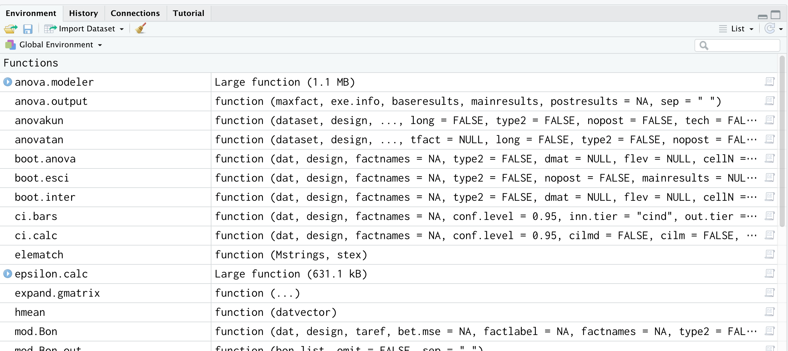
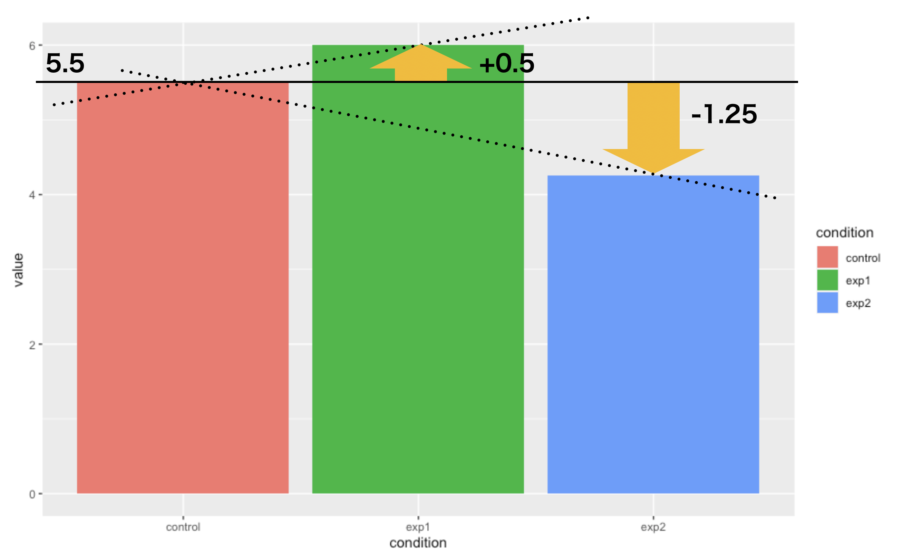
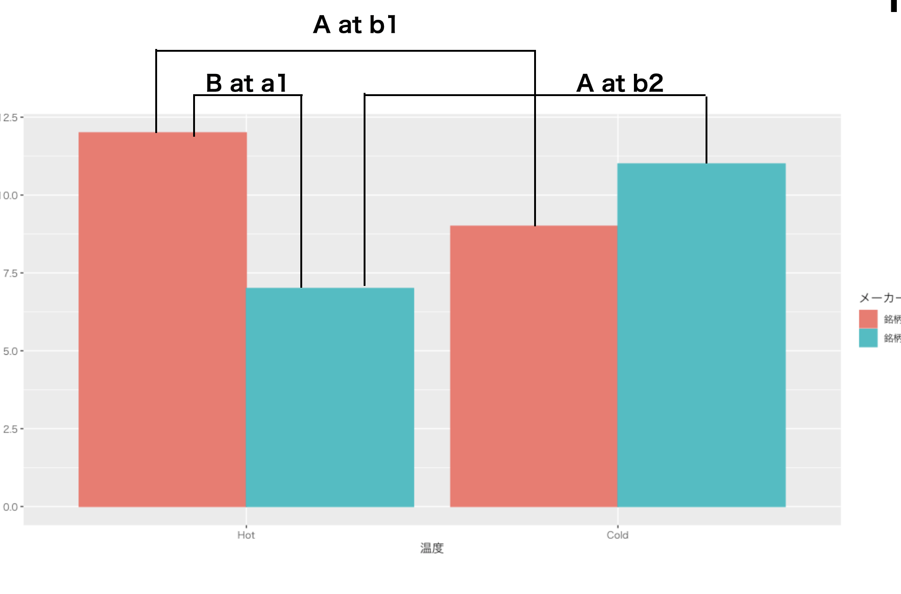

Chapter 16 Rによる帰無仮説検定2
ここまでで，要因計画を線形モデルとして，あるいは帰無仮説検定の枠組みで考えるやり方を説明してきました。 細かい計算はRで行う，ということで先送りしてきた話をここで回収したいと思います。Rを使った演習でどのように計算が進むのか，どのように結果が表示されるのか，どのようにその結果を解釈するのかについて学んでいきましょう。
16.1 Rで分散分析を行う上でのポイント
それではRを起動するところから始めましょう。復習がてら，作業を始める前の最初のステップについて改めて書いておきます。
16.1.0.0.1 RStudioの起動
RStudioを起動してください。パッケージのインストールをするときなど，管理人権限が必要になるケースがあります。
16.1.0.0.2 プロジェクトを開く
プロジェクトは前回作成した物で良いと思います。同じフォルダの中で，スクリプトファイルだけ変えれば良いでしょう。メニューからプロジェクトを開き(FIle\(\to\)Open Project)，RStudioの右上などで，プロジェクトが開いていることを確認しましょう(\(\to\)図\[fig::20_01\])。
16.1.0.0.3 Rスクリプトを開く
今日のコードを書くためのRスクリプトファイルを準備します。File > NewFile > R Scriptと進み，何も書いてないRスクリプトの画面を表示させてください。真っ白いファイルが開いたら問題ありません。
さて，準備OKですね。
16.1.1 数のタイプ
今回は要因計画をRで計算させるということですが，ここでポイントになるのが変数の型です。 繰り返しお話ししていますように，前期でやった回帰分析と今回扱う要因計画とは，線形モデルという同じ形をしています。違うところがあるとすれば，回帰分析の説明変数が連続的であるのに対し，要因計画の説明変数は離散的(カテゴリカル)であるということです。ですから，Rで分析する時も関数の形は同じであっても，変数の種類が違うということを明らかにしておかなければなりません。
Rにはいろいろな数字のタイプがあります。オブジェクトにいろいろな変数を格納できますが，その格納された変数のタイプには，次のような種類があります。
- numeric
-
数字。加減乗除などの対象になるもの。尺度水準で言えば間隔尺度水準か比率尺度水準にあたるもの。
- factor
-
ファクター型。訳して要因型ということもある。要因計画の「要因」です。この変数は数字とそれにつけるラベルとの組み合わせからなります。尺度水準で言えば名義尺度水準です。
- orderd factor
-
順序付きファクター型。ファクター型の特殊系で，中についている数字に順序情報がある物。尺度水準で言えば当然順序尺度水準に該当します。あまり使われることはないけど。
- chr
-
文字型(Character)。一見ファクター型と見分けがつかないこともあるが，こちらは内部に対応する数字があるわけでもなく，ただの文字。シングルクォーテーション，ダブルクォーテーションで括ったものが変数に渡されるとこの型になる。
- logical
-
論理型。TRUEかFALSEの2つの値しか持たない。TRUEは\(1\)に，FALSEは\(0\)に対応している。名義尺度水準の特殊な型で，オプションのスイッチオン・オフなどをこれで表したりする。大文字で書く
TRUEやFALSE，あるいはそれらの一文字目TやFはこの型のラベルとして予約されているので121，オブジェクト名などにしない方が良い。
これらの型を確認するには，オブジェクトの仕組みがどうなっているかを調べる必要があります。調べるのはstr関数で，これを使うとオブジェクトの中身がわかるようになっています。
第\[chapter4\]講のことを思い出しつつ，code:[code::23_01]を入力してみてください。
{#code::23_01 .c++ language="c++" label="code::23_01"
caption="オブジェクトに代入"} obj <- data.frame(
list(name=c("kosugi","yamada","ueda"), gender =
c(1,2,1), height = c(167,170,180), weight =
c(60,70,80)) ) str(obj)
16.1.1.0.1 コード解説
- 1-6行目
-
データフレームを作って
objオブジェクトに代入している。 - 7行目
-
objオブジェクトの構造を確認
さて，最後の7行目を実行すると，コンソールに次のように出力されていると思います(console[RS:out23_01])。
データフレームの中身out23_01
> str(obj)
'data.frame': 3 obs. of 4 variables:
$ name : chr "kosugi" "yamada" "ueda"
$ gender: num 1 2 1
$ height: num 167 170 180
$ weight: num 60 70 80
ここにあるように，objオブジェクトのname変数はchr型で，他の3つの変数は数値型(numeric)である，というのが示されています。ここで性別genderを因子型にしてみましょう(code:[code::23_02])。
{#code::23_02 .c++ language="c++"
label="code::23_02" caption="因子型にする"}
obj$gender <-
factor(obj$gender,label=c('male','female'))
これの出力はconsole[RS:out23_02]のようになります。
変数を因子型にしたout23_02
> str(obj)
'data.frame': 3 obs. of 4 variables:
$ name : chr "kosugi" "yamada" "ueda"
$ gender: Factor w/ 2 levels "male","female": 1 2 1
$ height: num 167 170 180
$ weight: num 60 70 80ここに示されているように，性別がファクター型になり，それは2つの水準を持っている。それぞれに「male」「female」というラベルがついている，ということがわかります。
このfactor型にしておくというのは，Rが名義尺度水準の変数なんだなと理解したことになりますので，これで回帰分析をするとOKということになります。逆にfactor型にしておかないと，量的変数として普通の回帰分析をしてしまうので，正しくない結果になります122。
16.1.2 分散分析用の関数を読み込もう
factor型にして分析するだけで，効果の大きさは見積もれるのですが，それを「判定」するには帰無仮説検定の枠組みで論じる必要があるでしょう。
また思い出して欲しいのですが，分散分析で群間・群内平方和の比較をした結果，有意であると判断されても「どこが有意なのか」までは分からないので，事後検定が必要なのでした。Rはデフォルトで分散分析やTukeyの多重比較をやってくれる関数などを持っていますが，別々の関数になっていて，自分で1つ1つやっていくのは面倒なところもあります。この主な分析\(\to\)事後の検定という一連の流れを，自動的にやってくれる便利な関数があります。
井関龍太さんのanovakunというのがそれで，ネットで一般に公開されています123。CRANからダウンロードするパッケージのようにはなっていませんので，これを使うにはローカルにanovakun関数を書いたファイル(執筆時点，2020年8月現在でanovakun_485.txt)をダウンロードし読み込むか，Rから直接インターネット経由でダウンロードして使うか，の2通りの方法のいずれかを使う必要があります。どちらにしても，Rのsource関数をつかうもので，ダウンロードしたファイルを使う場合はプロジェクトフォルダに当該ファイルをダウンロードした上で，読み込むコードを実行します(code:[code::23_03])。
{#code::23_03 .c++ language="c++" label="code::23_03"
caption="ソースを読み込む"}
source("anovakun_485.txt")
ネットから直接ダウンロードする場合は，インターネットにつながっている状態でcode:[code::23_04]を実行します124。
{#code::23_04 .c++ language="c++" label="code::23_04"
caption="ANOVA君のソースをネットからとってくる"}
source("http://riseki.php.xdomain.jp/index.php?plugin=attach&refer=ANOVA君&openfile=anovakun_485.txt")
これらのコードが実行されると，Rの環境にたくさんの関数が入っているはずです(図1.1)。これらが入っていればOKです。

anovakuを読み込んだあとの環境タブ
それでは実際の使い方を見ていきましょう。
16.2 一要因Between計画の実際
ではまず一要因Between計画の話から。例として第\[chapter21\]講のデータを使います。一応再掲しておきましょう(表1.1)。
| id | condition | notation | value |
|---|---|---|---|
| 1 | 1 | \(X_{11}\) | 6 |
| 2 | 1 | \(X_{12}\) | 6 |
| 3 | 1 | \(X_{13}\) | 5 |
| 4 | 1 | \(X_{14}\) | 5 |
| 1 | 2 | \(X_{21}\) | 7 |
| 2 | 2 | \(X_{22}\) | 4 |
| 3 | 2 | \(X_{23}\) | 7 |
| 4 | 2 | \(X_{24}\) | 6 |
| 1 | 3 | \(X_{31}\) | 4 |
| 2 | 3 | \(X_{32}\) | 3 |
| 3 | 3 | \(X_{33}\) | 4 |
| 4 | 3 | \(X_{34}\) | 6 |
\[table::23_01\]
まずはこれを線形モデルとして分析するところからです。code:[code::23_05]のようにデータフレームを組み上げます。
{#code::23_05 .c++ language="c++" label="code::23_05"
caption="データの準備"} # データフレームを組み上げる
Example1 <- data.frame(id = rep(1:4,3), condition =
rep(1:3,each=4), value = c(6,6,5,5,7,4,7,6,4,3,4,6)) #
要因型にする Example1$condition <-
factor(Example1$condition, labels =
c("control","exp1","exp2"))
16.2.0.0.1 コード解説
- 1-3行目
-
データフレームを作っています。IDは被験者番号ですが，群内での番号なので1から4の繰り返しを3回(
rep(1:4,3))です。条件conditionは3種類，各4人分(rep(1:3,each=4))，最後の従属変数(value)は手入力するしかありません。 - 5-7行目
-
条件変数を要因型にしています。ラベルは統制群(control)と実験群1(exp1)，実験群2(exp2)としています。
16.2.1 線形モデルとして分析
線形モデルとしての分析は，前期でやったようにlm関数を使います(code:[code::23_06])。
{#code::23_06 .c++ language="c++" label="code::23_06"
caption="lm関数で分析"} result.lm1 <-
lm(value~condition,data=Example1)
summary(result.lm1)
1行目がlm関数を使っていて，結果をresult.lm1オブジェクトに入れているところです。従属変数と独立変数をチルダ~で繋げているところ，思い出してください。2行目はこの結果の出力になります。結果はconsole[RS:out23_03]のように示されているはずです。
lm関数の出力out23_03
Call:
lm(formula = value ~ condition, data = Example1)
Residuals:
Min 1Q Median 3Q Max
-2.000 -0.500 -0.125 0.625 1.750
Coefficients:
Estimate Std. Error t value Pr(>|t|)
(Intercept) 5.5000 0.5713 9.627 4.91e-06 ***
conditionexp1 0.5000 0.8079 0.619 0.551
conditionexp2 -1.2500 0.8079 -1.547 0.156
---
Signif. codes: 0 ‘***’ 0.001 ‘**’ 0.01 ‘*’ 0.05 ‘.’ 0.1 ‘ ’ 1
Residual standard error: 1.143 on 9 degrees of freedom
Multiple R-squared: 0.3562, Adjusted R-squared: 0.2131
F-statistic: 2.489 on 2 and 9 DF, p-value: 0.1379
これを見ると，切片(Intercept)の推定値が5.5，次に2つの説明変数の係数が書いてあります。文字が連なっているのでわかりにくいかもしれませんが，それぞれconditionとexp1の関係，conditionとexp2の関係を表しています。図1.2を見ると結果の意味は分かり易いと思います。

線形モデルとして分析した結果の意味するもの
第\[chapter21\]講では，線形モデルを \[X_{ij} = \beta_0 + \beta_j + \epsilon_{ij}\] としていました。ここで\(\beta_0\)は全体平均でした。全体平均を基本として，各水準に対する効果\(\beta_j\)がどうなったか，というモデル化でしたが，ここでは \[X_{ij} = \bar{X}_1 + \beta_j + \epsilon_{ij}\] という形になっています(図1.2)。本質的に違うものではありません。統制群に比べて実験群1の平均値は\(+0.5\)，実験群2は\(-1.25\)の平均値の違いがあるのだな，と思っていただければ結構です。その後ろにStd.Errorや\(t\)値が出ていますが，これらは推定された回帰係数の標準誤差および，係数が\(0\)であるという帰無仮説を棄却できるかどうかの検定結果が出ています125。
線形モデルですから，モデルの適合度(Multiple R-squared, Adjusted R-squared)なども出ていますが，それよりも最後の一行，この線形モデル全体の検定結果が出ています。これは要因計画のもう1つの切り口，分散分析による結果と同じものです。では分散分析の視点からこの分析結果を見てみましょう。
16.2.2 帰無仮説検定として分析
要因計画の帰無仮説検定版，つまり分散分析の結果ですが，線形モデルと同じなので今回得られた出力をすこし変えるだけで対応できます。最も単純には，先ほどの線形モデルの結果をanova関数に入れると，分散分析表が次のように示されます(code:[code::23_07],console[RS:out23_04])。
{#code::23_07 .c++ language="c++" label="code::23_07"
caption="分散分析としてみる"} anova(result.lm1)
分散分表の出力out23_04
Analysis of Variance Table
Response: value
Df Sum Sq Mean Sq F value Pr(>F)
condition 2 6.50 3.2500 2.4894 0.1379
Residuals 9 11.75 1.3056 ここから，\(F(2,9)=2.4894,p=0.1379\)で統計的に有意な差はみられなかった，と判断できます。これらの数字，どこをどう読み取ったのか確認してください。
これだけですから，lm関数だけでいいじゃないかと考える人もいるかもしれません。基本的には問題ないのですが，分散分析は「群のサンプルサイズが違う場合」や，「分散の計算」においていくつかの計算バリエーションがあり，Rデフォルトのlm関数では十分対応できなくなるシーンが出てきます。
そこで先ほど導入した，分散分析線用関数anovakunを使います。実際の使い方は次のようになります(code:[code::23_08])。
{#code::23_08 .c++ language="c++" label="code::23_08"
caption="anovakunで実行"}
anovakun(Example1[,2:3],"As",3,eps=T)
まず，anovakunには分散分析に必要なデータだけを与える必要があります。今回のデータフレームにあるid列は入りませんので，Example1[,2:3]としてデータの2列目と3列目だけ(2列目から3列目まで)に限定しています126。次に書いてあるAsは，anovakun独特の記法です。ここでのsは被験者subjectを意味しており，これの左側に群間要因を，右側に群内要因を書きます。今回は一要因の群間デザインですので，左側に1つ要因Aをおく，という書き方になっています。これをsAのようにすると一要因群内デザイン，AsBとすると，要因Aは群間で要因Bは群内の混合計画を表すことになります。最後に，今回の一要因Aの水準数を入力すれば，anovakun関数は全ての分析を実行してくれます。オプションとして，効果量\(\epsilon^2\)を表示するスイッチをオン(eps=T)とすると，効果量も出してくれます(console[RS:out23_05])。
anovakunの出力out23_05
[ As-Type Design ]
This output was generated by anovakun 4.8.5 under R version 4.0.2.
It was executed on Tue Sep 15 13:40:30 2020.
<< DESCRIPTIVE STATISTICS >>
--------------------------
A n Mean S.D.
--------------------------
a1 4 5.5000 0.5774
a2 4 6.0000 1.4142
a3 4 4.2500 1.2583
--------------------------
<< ANOVA TABLE >>
--------------------------------------------------------------
Source SS df MS F-ratio p-value epsilon^2
--------------------------------------------------------------
A 6.5000 2 3.2500 2.4894 0.1379 ns 0.2131
Error 11.7500 9 1.3056
--------------------------------------------------------------
Total 18.2500 11 1.6591
+p < .10, *p < .05, **p < .01, ***p < .001
output is over --------------------///各群の平均値，標準偏差および，分散分析表が表示されていますね。これを見て，どことどこの数字を参照すれば良いか等，確認しておいてください。
これだけだと，とくにanovakunが便利そうに思えないかもしれません。が，以下様々な要因計画に対応しているので，徐々にその良さがわかってくると思います。
16.3 二要因Between計画の実際
それでは続いて，二要因の計画にいきましょう。第\[chapter22\]講のデータを使います。一応再掲しておきましょう(表1.2)。
| 通し番号 | 群での番号 | 温度 | メーカー | 評価 |
|---|---|---|---|---|
| 1 | 1 | Hot | 銘柄A | 13 |
| 2 | 2 | Hot | 銘柄A | 11 |
| 3 | 3 | Hot | 銘柄A | 12 |
| 4 | 1 | Hot | 銘柄B | 7 |
| 5 | 2 | Hot | 銘柄B | 6 |
| 6 | 3 | Hot | 銘柄B | 8 |
| 7 | 1 | Cold | 銘柄A | 9 |
| 8 | 2 | Cold | 銘柄A | 9 |
| 9 | 3 | Cold | 銘柄A | 9 |
| 10 | 1 | Cold | 銘柄B | 13 |
| 11 | 2 | Cold | 銘柄B | 11 |
| 12 | 3 | Cold | 銘柄B | 9 |
\[tbl::23_02\]
これをデータフレーム型にします。温度，メーカーは名義尺度水準なので要因型にします(code:[code::23_09])。
{#code::23_09 .c++ language="c++" label="code::23_09"
caption="データフレームにする"} Example2 <-
data.frame(id = 1:12, num = rep(1:3,4), temp =
rep(1:2,each=6), maker = rep(rep(1:2,each=3),2), value =
c(13,11,12,7,6,8,9,9,9,13,11,9)) Example2$temp <-
factor(Example2$temp, labels=c("Hot","Cold"))
Example2$maker <- factor(Example2$maker,
labels=c("A","B"))
16.3.1 線形モデルとして分析
これでデータはできたので，分析にかけるだけですね。二要因以上に計画が複雑になる場合は，交互作用を考えなければならないことに注意が必要です。線形モデルで表現するには，次のようにします(code:[code::23_10])。
{#code::23_10 .c++ language="c++" label="code::23_10"
caption="線形モデルとして実行"} result.lm2 <-
lm(value ~ temp*maker,data=Example2)
summary(result.lm2)
ここで，説明変数が\(\ast\)でつなげられています。これで主効果と交互作用の両方をモデルの中に入れたことになります。結果はconsole[RS:out23_06]のように表示されるはずです。
交互作用を入れたモデルの出力out23_06
> summary(result.lm2)
Call:
lm(formula = value ~ temp * maker, data = Example2)
Residuals:
Min 1Q Median 3Q Max
-2.00 -0.25 0.00 0.25 2.00
Coefficients:
Estimate Std. Error t value Pr(>|t|)
(Intercept) 12.0000 0.7071 16.97 1.48e-07 ***
tempCold -3.0000 1.0000 -3.00 0.01707 *
makerB -5.0000 1.0000 -5.00 0.00105 **
tempCold:makerB 7.0000 1.4142 4.95 0.00112 **
---
Signif. codes: 0 ‘***’ 0.001 ‘**’ 0.01 ‘*’ 0.05 ‘.’ 0.1 ‘ ’ 1
Residual standard error: 1.225 on 8 degrees of freedom
Multiple R-squared: 0.7867, Adjusted R-squared: 0.7067
F-statistic: 9.833 on 3 and 8 DF, p-value: 0.004641
ここに示されているのは，温度temp変数の第一水準(Hot)かつメーカーmaker変数の第一水準(銘柄A)を基準にした時に，tempColdつまりメーカーは同じ(銘柄A)で温度だけ違う群は平均値が\(-3.0\)，次にメーカーをBでmakerB温度はHotの群と比べるとその平均値は\(-5.0\)，両方変えると\(+7.0\)になる，ということです。それぞれ標準誤差や\(t\)値が出ていますが，これは傾きが0である，という帰無仮説を棄却しているだけであって，効果の大きさについてはわかりません。
また，最後に\(F\)統計量が出ています。自由度が\((3,8)\)の時に\(p=0.004641\)ですが，これは線形モデル全体としてみた時に横一線の帰無仮説モデルとは違うね，というだけであって，具体的にどこがどう違うのか，というのがわかりにくくなっています。
そこでそれぞれの水準について検証できる，分散分析モデルで分析してみます。
16.3.2 帰無仮説検定として分析
要因計画の帰無仮説検定版，でやってみましょう。先ほどと同じように，Rがデフォルトで持っている関数anovaに線形モデルの結果を入れてみます(code:[code::23_11])。
{#code::23_11 .c++ language="c++" label="code::23_11"
caption="分散分析としてみる"} anova(result.lm2)
結果はconsole[RS:out23_07]のようになります。
分散分析表の出力out23_07
> anova(result.lm2)
Analysis of Variance Table
Response: value
Df Sum Sq Mean Sq F value Pr(>F)
temp 1 0.75 0.75 0.5 0.499576
maker 1 6.75 6.75 4.5 0.066688 .
temp:maker 1 36.75 36.75 24.5 0.001121 **
Residuals 8 12.00 1.50
---
Signif. codes: 0 ‘***’ 0.001 ‘**’ 0.01 ‘*’ 0.05 ‘.’ 0.1 ‘ ’ 1
分散分析表だけでなく，ご丁寧に有意かどうかわかりやすいような記号(.や*など)をつけてくれています。最後の一行にはSignif. codesとあって，米印が1つなら5%，2つなら1%，3つなら0.1%水準で有意である，という読み方が書いてあります127。これを見ると，maker水準は5%水準で有意にはならず128，交互作用項(temp:maker)は有意になっていることがわかります。
ただ，このままだと「交互作用は有意だけど，どこがどう違うのかわからない」という状況ですね。4つの母平均が同じである(\(\mu_{11}=\mu_{12}=\mu_{21}=\mu_{22}\))という帰無仮説が棄却されただけで，どこがどう違うのかについては事後の検定を追加しなければならないからです。
ではこれをanovakunでやってみましょう。彼(?)なら一気に全ての答えを出してくれるのです(code:[code::23_12])。
{#code::23_12 .c++ language="c++" label="code::23_12"
caption="anovakunで実行"}
anovakun(Example2[,3:5],"ABs",2,2,eps = T)
先ほどと同様，anovakunにはid列やnum列は必要ありませんので，3行目から5行目まで，要因A,Bと従属変数だけを与えます。要因計画は間\(\times\)間ですので，被験者sの左側にA,Bとしています。2つの要因はそれぞれ2水準ですので，水準数を2つ書いています。最後のeps=Tは，効果量である\(\epsilon^2\)を表示するスイッチをオン(TRUE)，ということです。
結果はconsole[RS:out23_08]のように表示されます。
ABsタイプの出力out23_08
[ ABs-Type Design ]
This output was generated by anovakun 4.8.5 under R version 4.0.2.
It was executed on Tue Sep 15 11:50:09 2020.
<< DESCRIPTIVE STATISTICS >>
-------------------------------
A B n Mean S.D.
-------------------------------
a1 b1 3 12.0000 1.0000
a1 b2 3 7.0000 1.0000
a2 b1 3 9.0000 0.0000
a2 b2 3 11.0000 2.0000
-------------------------------
<< ANOVA TABLE >>
---------------------------------------------------------------
Source SS df MS F-ratio p-value epsilon^2
---------------------------------------------------------------
A 0.7500 1 0.7500 0.5000 0.4996 ns -0.0133
B 6.7500 1 6.7500 4.5000 0.0667 + 0.0933
A x B 36.7500 1 36.7500 24.5000 0.0011 ** 0.6267
Error 12.0000 8 1.5000
---------------------------------------------------------------
Total 56.2500 11 5.1136
+p < .10, *p < .05, **p < .01, ***p < .001
<< POST ANALYSES >>
< SIMPLE EFFECTS for "A x B" INTERACTION >
---------------------------------------------------------------
Source SS df MS F-ratio p-value epsilon^2
---------------------------------------------------------------
A at b1 13.5000 1 13.5000 9.0000 0.0171 * 0.2133
A at b2 24.0000 1 24.0000 16.0000 0.0039 ** 0.4000
B at a1 37.5000 1 37.5000 25.0000 0.0011 ** 0.6400
B at a2 6.0000 1 6.0000 4.0000 0.0805 + 0.0800
Error 12.0000 8 1.5000
---------------------------------------------------------------
+p < .10, *p < .05, **p < .01, ***p < .001
output is over --------------------///最初に，水準ごとの平均値と標準偏差が表示され，続いて分散分析表が示されています。 これを見ると，要因A(温度)の主効果はなく(\(F(1,8)=0.500,p=0.4996\))129，ついで要因Bの効果も5%水準では認められない(10%水準で有意，その記号として\(+\)が使われています)，交互作用は5%水準で有意という結果になりました。ここまでは当然，先ほどと同じですね。効果量\(\epsilon^2\)の列を見ると，交互作用は全体の62%の分散を説明したことになりますから，これはかなり大きな効果だったようだ，ということがわかります。
続いてPOST ANALYSISとして事後の検定が表示されています。SIMPLE EFFECTS for "A x B" INTERACTIONとあるのは，「AとBの交互作用についての単純効果」という意味で(直訳！)，各水準に限定した時に他の水準の効果があったかどうかをみています。たとえば最初の行，A at b1とありますが，これは要因B(銘柄)の第一水準における要因A(温度)の効果をみていることになります。以下同様ですが，これらは分散分析の表をより細かくしてチェックしているようなものです。これを見ると，冷たい時の銘柄には差がない(B at a2)ようですが，それ以外の差は統計的に有意，と言えそうです。
これらの結果を見やすくするために，図1.3に対応するところに線を引いてみました。結果と見比べて，どこに差があったか確認しておいてください。

POST ANALYSISの検定結果の確認
また，これらの結果を報告する時は，次のように書くと良いでしょう。
温度と銘柄の効果を独立変数とした二要因分散分析(\(2 \times 2\)のBetweenデザイン)をおこなったところ，交互作用が有意(\(F(1,8)=24.5,p=0.0011,\epsilon^2=0.6267\))になり，事後の検定の結果，銘柄Aにおける温度の効果(\(F(1,8)=9,p=0.0171,\epsilon^2=0.21133\))，銘柄Bにおける温度の効果(\(F(1,8)=16.0,p=0.0039,\epsilon^2=0.4000\))，および温かい時の銘柄の効果(\(F(1,8)=25,p=0.0011,\epsilon^2=0.6400\))が統計的に有意であった。
16.4 一要因Within計画の実際
最後にWithin計画の例をやってみましょう。仮想データとして第\[chapter22\]講のものを使います。念のため表1.3に再掲しました。
| ID | Time1 | Time2 | Time3 |
|---|---|---|---|
| 1 | 10 | 5 | 9 |
| 2 | 9 | 4 | 5 |
| 3 | 4 | 2 | 3 |
| 4 | 7 | 3 | 5 |
\[tbl::23_03\]
これをデータフレーム型にします(code:[code::23_13])。
{#code::23_13 .c++ language="c++" label="code::23_13"
caption="データフレームにする"} Example3 <-
data.frame(ID=1:4, Time1 = c(10,9,4,7), Time2 =
c(5,4,2,3), Time3 = c(9,5,3,5))
線形モデルとして表現するには，少し複雑な操作が必要ですので130，今回は分散分析的アプローチのみ紹介したいと思います。
16.4.1 帰無仮説検定として分析
群内モデルのanovakunでの入力は次のようになります(code:[code::23_14])。
{#code::23_14 .c++ language="c++" label="code::23_14"
caption="anovakunで実行"} anovakun(Example3[, 2:4],
"sA", 3, eps = T)
データセットや変数の指定，効果量オプションの指定はとくに追記することはありません。デザインの指定が"sA"とsの右側に来ているところがポイントです。これを実行すると，console[RS:out23_09]のように結果が示されます。
まず群ごとの記述統計量が計算されています。その次に<< SPHERICITY INDICES >>とありますね。これはと訳されます。\(t\)検定の時にWelchの補正をしたのを思い出して欲しいのですが，分散分析の時も基本的に母分散が同じである，という仮定があります。この仮定が満たされない場合は補正をしなければなりません。とくにWithin計画の場合は，全部の分散(共分散)が等しいという仮定を置くのではなく，少なくとも全方向に等しく広がっている空間であるはずだ，という仮定をおいています131。
sAタイプのanovakun出力out23_09
[ sA-Type Design ]
This output was generated by anovakun 4.8.5 under R version 4.0.2.
It was executed on Tue Sep 15 13:50:06 2020.
<< DESCRIPTIVE STATISTICS >>
--------------------------
A n Mean S.D.
--------------------------
a1 4 7.5000 2.6458
a2 4 3.5000 1.2910
a3 4 5.5000 2.5166
--------------------------
<< SPHERICITY INDICES >>
== Mendoza's Multisample Sphericity Test and Epsilons ==
-------------------------------------------------------------------------
Effect Lambda approx.Chi df p LB GG HF CM
-------------------------------------------------------------------------
A 1.0000 -0.0000 2 1.0000 ns 0.5000 1.0000 3.0000 0.5000
-------------------------------------------------------------------------
LB = lower.bound, GG = Greenhouse-Geisser
HF = Huynh-Feldt-Lecoutre, CM = Chi-Muller
<< ANOVA TABLE >>
---------------------------------------------------------------
Source SS df MS F-ratio p-value epsilon^2
---------------------------------------------------------------
s 39.0000 3 13.0000
---------------------------------------------------------------
A 32.0000 2 16.0000 16.0000 0.0039 ** 0.3896
s x A 6.0000 6 1.0000
---------------------------------------------------------------
Total 77.0000 11 7.0000
+p < .10, *p < .05, **p < .01, ***p < .001
これが満たされない場合は，Greenhouse-Geisserの補正やHuynh-Feldt-Lecoutreなどの補正をしなければならないが，どうでしょうね？
というのを確認するのがこの箇所です(console[RS:out23_10])。今回は\(p\)が1.000で\(ns\)，つまりnot
significant=有意に歪んでいるとは言えない，ということなので補正は不要です。もしここが有意である，つまり丸いという状況から異なっている現状があると思われるのであれば，自由度などの補正が必要で，その時anovakunはオプションで補正を指定できます。ともかく今回は，このまま先に進めそうです132。
下位検定の出力out23_10
<< POST ANALYSES >>
< MULTIPLE COMPARISON for "A" >
== Shaffer's Modified Sequentially Rejective Bonferroni Procedure ==
== The factor < A > is analysed as dependent means. ==
== Alpha level is 0.05. ==
--------------------------
A n Mean S.D.
--------------------------
a1 4 7.5000 2.6458
a2 4 3.5000 1.2910
a3 4 5.5000 2.5166
--------------------------
----------------------------------------------------------
Pair Diff t-value df p adj.p
----------------------------------------------------------
a1-a2 4.0000 5.6569 3 0.0109 0.0328 a1 > a2 *
a1-a3 2.0000 2.8284 3 0.0663 0.0663 a1 = a3
a2-a3 -2.0000 2.8284 3 0.0663 0.0663 a2 = a3
----------------------------------------------------------
output is over --------------------///
その先にはやっと分散分析表が出てきました。これを見るとSource列のsとあるところ，これが個人差です。ここについては検定の対象外なので，\(F\)値などの計算は行われていません。その下のAからが要因の効果で，s x Aとあるところ，つまりAに伴って生じる個人差，のところが比較対象となる誤差のところです。この\(F\)値が16.00，\(p=0.0039\)で統計的に有意(ちなみに効果量\(\epsilon^2=0.3896\))なので，水準間のどこかには差があるということがわかります。
続く<< POST ANALYSES >>のところに，Shefferの方法を使った事後の検定があります。これによると，a1-a2のペアは\(a1 > a2\)の関係にあって有意で，そのほかのペアは有意ではない，ということがわかります。
結果としては，たとえば次のように報告するといいでしょう。
一要因3水準の分散分析を行ったところ，\(F(2,6)=16.00,p=0.0039,\epsilon^2=0.386\)で統計的に有意であり，事後検定の結果a1水準がa2水準よりも高いことが示された(Shafferの方法による多重比較)。
以上で解説を終わります。 分散分析を面倒で煩雑な作業だ，と思った人も少なくないと思います。事実そうなのですが，だからと言って適当に実行してしまうと，誤用・誤解など問題のある研究実践になる可能性がありますので，細部まで細かく配慮しながら，どこにどういう意味があって，どのような読み取り方をするべきなのかをしっかりと理解しておいてください。
このほか，たとえば三要因計画になるとか，混合計画になるなどすると，それぞれ分散分析表や事後の分析の読み取り方などでアウトプットがどんどん長くなります。が，そこで注意を切らすのではなく，落ち着いて眺めてみてください。基本的には同じような前提，作業工程を，繰り返し繰り返し適用していくだけなのです。複雑で難解なのではなく，単純で煩雑なので嫌気が差してしまうだけです。ここでしっかりと腹を据えて読み取れるようになれば，分散分析は意外と素直なモデルに見えるかもしれません。
それでも帰無仮説検定という実践的判断基準を実践するので，ある種の断定(有意差があった，なかった)が以後の解釈を歪めてしまいかねないという可能性は否定できませんし，確率的判定をしている以上は検定の多重性の問題からは逃れることができません。これを乗り越えるためには，もう少し確率的なモデルのことを詳しく理解する必要がありますし，モーメント法(平均値や不偏分散で母数を推定する)ではないほかの方法で考える必要もあります。続く講義ではこれらについて解説していきます133。
16.5 課題
16.5.0.0.1 課題1 線形モデルとしての分析
ある学校の国語の授業で，ある教師が4つのクラスそれぞれに対して個別のテキストを使って授業を行い，同一のテストを行うことでテキストの効果があるかどうかを検証したとします。
各クラスには10人の生徒がいて，それぞれのテスト結果が次の通りです(表1.4)。次の各指示に従い，その結果について回答してください。なお，このデータセットはLesson8exe1.csvファイルに入っています。
| textA | textB | textC | textD |
|---|---|---|---|
| 56 | 49 | 40 | 48 |
| 55 | 53 | 41 | 53 |
| 62 | 49 | 47 | 54 |
| 53 | 52 | 48 | 51 |
| 53 | 52 | 43 | 51 |
| 56 | 46 | 40 | 48 |
| 59 | 49 | 44 | 45 |
| 51 | 51 | 43 | 49 |
| 57 | 54 | 43 | 51 |
| 59 | 50 | 49 | 49 |
\[L23::exe1\]
-
回帰分析を行ってください。切片の推定値はいくらになりましたか。
-
回帰分析を行った結果，テキストAにくらべてテキストBの平均値はどれぐらい違うと思われますか。
-
回帰分析を行った結果，テキストAを基準とした時にテキストCに向けて引いた回帰線について，正しい記述を選びなさい。
-
分散分析を実行し，その時のF値を答えてください。
-
分散分析を実行し，ボンフェローニの下位検定の結果として平均値の差が認められなかったペアを答えてください。
16.5.0.0.2 課題2 Betweenデザインの分散分析
別の学校では，テキストをA,B,Cの3種類とし，教員が二人がそれぞれのテキストを使って教えることにしました。1クラス12人，一学年6クラスを使っての実験です。
授業後のテストの点数が表1.5のようになっています。次の各指示に従い，その結果について回答してください。なお，このデータセットはLesson8exe2.csvファイルに入っています。
| textA-teacherA | textB-teacherA | textC-teacherA | textA-teacherB | textB-teacherB | textC-teacherB |
|---|---|---|---|---|---|
| 25 | 32 | 30 | 28 | 23 | 34 |
| 39 | 40 | 29 | 20 | 27 | 42 |
| 36 | 39 | 25 | 31 | 27 | 42 |
| 31 | 29 | 23 | 19 | 26 | 37 |
| 41 | 42 | 19 | 35 | 16 | 35 |
| 34 | 21 | 24 | 24 | 27 | 35 |
| 33 | 43 | 14 | 25 | 19 | 33 |
| 31 | 26 | 19 | 34 | 21 | 41 |
| 28 | 44 | 31 | 23 | 35 | 34 |
| 34 | 31 | 26 | 22 | 30 | 38 |
| 31 | 26 | 31 | 19 | 17 | 28 |
| 32 | 29 | 30 | 23 | 27 | 33 |
\[L23::exe2\]
-
分散分析を実行し，テキストの効果について正しく述べてある文章を選んでください。
-
分散分析を実行し，教員の効果について正しく述べてある文章を選んでください。
-
分散分析を実行し，交互作用の効果について正しく述べてある文章を選んでください。
-
下位検定の結果，テキストAにおける教員の効果は合ったと言って良いでしょうか。正しく述べている文章を選んでください。
-
下位検定の結果，教員Bが受け持ったクラスにおいて，どういう効果があったと言えるでしょうか。正しく述べている文章を選んでください。
16.5.0.0.3 課題3 Withinデザインの分散分析
さらに別の学校では，テキスト・教員は一種類・一人なのですが，4つの時期において成績が変化するかどうかを追跡調査しました。
各時期のテストの点数が表1.6のようになっています。次の各指示に従い，その結果について回答してください。なお，このデータセットはLesson8exe3.csvファイルに入っています。
| id | period1 | period2 | period3 | period4 |
|---|---|---|---|---|
| 1 | 39 | 38 | 42 | 52 |
| 2 | 59 | 66 | 62 | 56 |
| 3 | 27 | 33 | 44 | 44 |
| 4 | 41 | 38 | 41 | 42 |
| 5 | 46 | 46 | 44 | 51 |
| 6 | 22 | 21 | 37 | 27 |
| 7 | 54 | 45 | 52 | 51 |
| 8 | 59 | 51 | 76 | 65 |
| 9 | 49 | 55 | 59 | 66 |
| 10 | 48 | 37 | 41 | 47 |
| 11 | 34 | 36 | 39 | 45 |
| 12 | 65 | 54 | 62 | 69 |
| 13 | 51 | 42 | 43 | 43 |
| 14 | 44 | 37 | 53 | 53 |
| 15 | 42 | 47 | 50 | 54 |
| 16 | 49 | 48 | 61 | 47 |
| 17 | 48 | 39 | 62 | 49 |
| 18 | 46 | 50 | 44 | 46 |
| 19 | 45 | 40 | 48 | 55 |
| 20 | 44 | 48 | 46 | 57 |
\[L23::exe3\]
-
分散分析を実行し，時期の主効果について正しく述べている文章を選んでください。
-
下位検定を見て，効果があった箇所を選んでください。
-
もう1つは「説明する」です。↩︎
-
なんで\(b\)なんだ\(a\)でもいいじゃないか，と言われたら返す言葉もないのですが，慣例的に\(b\)で係数を表しています。ちなみに今はアルファベットの\(b\)ですが，後期になると\(b\)のギリシア文字\(\beta\)に変わります。ギリシア文字で表現するのは推測統計学的な推定に関わるようになってからです。↩︎
-
親の身長から子供の身長を予測することを考えてみてください。次にその子が親になって，その子がまた親になって・・・という時に，「背の高い親からは背の高い子しかうまれない」というルールであれば，世界はものすごく高身長なひとと低身長な人に二分されてしまいます。そうではないということは，背の高い親から背の低い子が生まれることもあるし，その逆もあるということです。また野球選手などでルーキーのときは成績がいいのに，2年目になったら成績が下がる，というのは2年目のジンクスなどといわれますが，その人の平均的な能力以上のスコアが出た次の年に，平均的な値に帰るために低くなりがちなことは，当然ありえることでもあるのです。こうした効果のことを回帰効果といいます。↩︎
-
細かい計算式については，(kosugi2018のPp.133をみてください?)。↩︎
-
指数についてこれまで習ったことを思い出してください。\(a\neq 0\)のとき，\(a^0=1\)ですし，\(a^{-n}=\frac{1}{a^2}\)と定義するのでした。↩︎
-
こういうの見ると，「あ，ずるい。著者め逃げたな」と思いませんか。私なら思います。そう思われると悔しいので，参考図書として@西内201712をあげておきます。また@長沼201611のP.62–69も参考になります。↩︎
-
\(\pi\)は3.141592...という実数です。円周率ですね。面積になぜ円周率が出てくるのか，それがガウスの凄いところです。↩︎
-
とくに文系には！私も文系出身ですので，最初に習った頃は「うん，わからん！」となりました。↩︎
-
過去形で書いていることからも明らかなように，これら数表が便利だったのは現在ほどコンピュータが個人消費者レベルにまで浸透していない時代のことで，今は次に紹介する計算機を使う方が素早く正確です。↩︎
-
じゃあなんでやらせたんだ，という意見もあるかもしれませんが，たとえば公認心理師認定試験など計算機を持ち込めない環境で，数表から読み取って答えを出さねばならないシーンがあるかもしれない，と思いまして。↩︎
-
標準化したスコアについてはPp.を参照。↩︎
-
Rを使った計算をしました。
1-pnorm(q=1,mean=0,sd=1)=0.15865，あるいは1-pnorm(q=2,mean=0,sd=1)=0.02275013です。↩︎ -
うまくいかなくて質問するときは，どの行でどのようなエラーが出たのか，を伝えてください。エラーの文章をコピーして伝えるようにしてください。よくない質問の仕方は「なんかエラーが出てできませんでした」です。こちらもサポートのしようがありません。↩︎